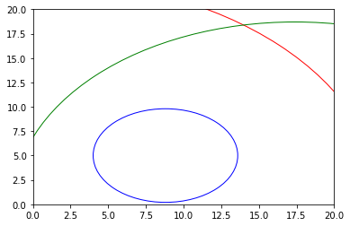

In [204]: runfile('/Users/erikzhou/Desktop/git_prac/iot_project/code/trilateral.py', wdir='/Users/erikzhou/Desktop/git_prac/iot_project/code')
[23.1, 9.9, 84.9, 4.8, 18.7]
The Node X location is 14.0 36.7
the right location is [7.3, 2.5]
the error is 34.9

In [205]: runfile('/Users/erikzhou/Desktop/git_prac/iot_project/code/rssi_least_sqaure.py', wdir='/Users/erikzhou/Desktop/git_prac/iot_project/code')
m, c:-18.549794068963205, -45.88914172179528 and the distance for -70.03 is 23.1
In [206]: runfile('/Users/erikzhou/Desktop/git_prac/iot_project/code/rssi_least_sqaure.py', wdir='/Users/erikzhou/Desktop/git_prac/iot_project/code')
m, c:-18.549794068963205, -45.88914172179528 and the distance for -70.03 is 9.9
In [207]: